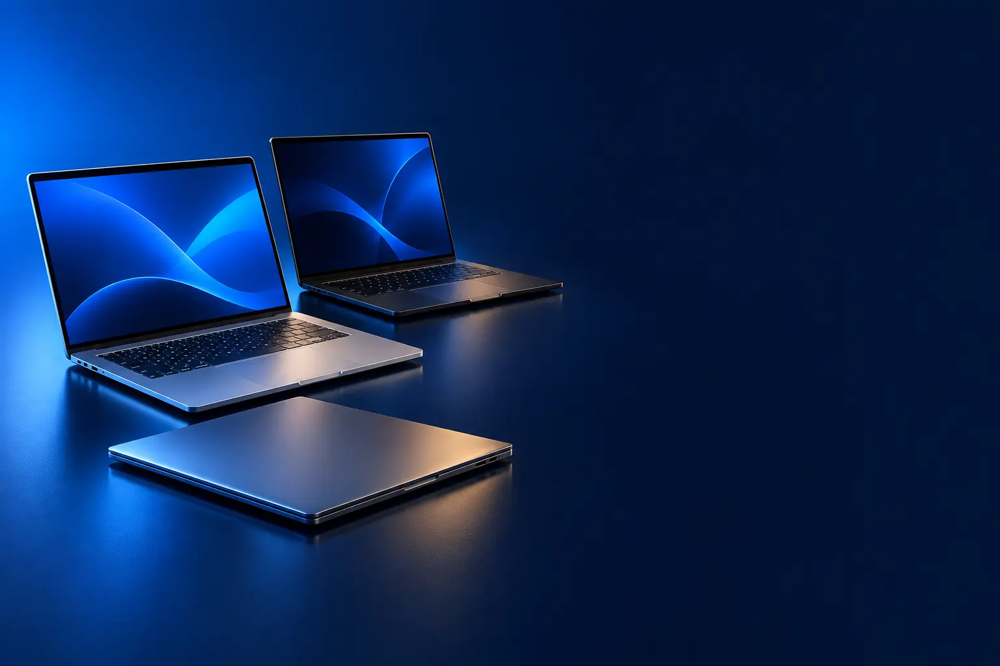

ESTUDO E TRABALHO
Melhor notebook custo-benefício para estudar e trabalhar
Para aulas, planilhas, reuniões e navegação, com bateria para o dia.

Melhor custo-benefício para estudoASUS Vivobook Go 15 (Ryzen 5 7520U)
CURADORIA TECHAPROVADO · 2026
Notebook é compra para anos. Separamos 9 modelos em 2 perfis e dizemos para quem cada um vale a pena.

NOSSA LEITURA
Para estudar e trabalhar, procure Ryzen 5 ou Core i5, 8 GB de memória (16 GB é melhor) e SSD. Para jogar, a placa de vídeo manda: RTX 4050 ou superior.
COMECE POR AQUI
ESTUDO E TRABALHO
Para aulas, planilhas, reuniões e navegação, com bateria para o dia.
GAMER
Placa de vídeo dedicada e tela rápida para jogar.

A FICHA, TRADUZIDA
01 - PROCESSADOR
O processador define a velocidade geral. Celeron é o mais básico; Core i3 e Ryzen 3 são de entrada; Core i5, Ryzen 5 e Core Ultra 5 são o equilíbrio; i7, Ryzen 7 e i9 são para trabalho pesado.
Para estudar e trabalhar, Ryzen 5 ou Core i5 bastam por anos. Celeron só para navegador e textos.
Letras no fim do nome dizem o tipo: U é econômico (bateria), H e HX são de alto desempenho (gamer).
02 - MEMÓRIA E SSD
A memória RAM é a mesa de trabalho: quanto mais, mais programas e abas abertos sem travar. O SSD é o armazenamento: muito mais rápido que o antigo HD.
8 GB funciona para estudo; 16 GB é o ideal para trabalho e jogos. Prefira SSD de 256 GB ou mais; eMMC é lento e pequeno.
Muitos notebooks deixam ampliar a memória depois. Confira se há slot livre.
03 - PLACA DE VÍDEO
Notebooks comuns usam gráficos integrados, suficientes para vídeo e trabalho. Os gamer têm placa dedicada da NVIDIA (RTX), que roda jogos 3D.
RTX 3050 é entrada; RTX 4050 é o ponto de equilíbrio; RTX 4060 roda lançamentos com qualidade alta; RTX 5070 é topo.
DLSS é um recurso das RTX que aumenta os quadros por segundo usando inteligência artificial.
04 - SISTEMA
Alguns notebooks vêm com Linux (KeepOS) para baixar o preço. Funciona para navegar, mas a maioria das pessoas instala o Windows, que é vendido à parte.
Some o preço de uma licença do Windows ao comparar um notebook com Linux e outro com Windows.
MacBooks usam macOS e integram com o iPhone; alguns programas e jogos de Windows não rodam neles.
05 - TELA
Telas de 14" são mais leves para carregar; 15,6" e 16" são mais confortáveis para trabalhar. Full HD é o mínimo recomendado; HD (1366 × 768) fica granulado.
Telas de 120 Hz ou 144 Hz deixam tudo mais fluido; nos gamer, são essenciais. OLED tem cores e preto superiores.
Tela antirreflexo ajuda perto de janelas e em ambientes claros.
A CURADORIA EM DETALHE
9 modelos da pesquisa
PERFIL · 5 MODELOS, DA ENTRADA AO TOP DE LINHA
Para estudar e trabalhar, o notebook precisa abrir rápido, aguentar muitas abas e videochamadas e ter tela confortável. O que mais pesa é processador, memória (8 GB no mínimo) e SSD.

ESTUDO E TRABALHO · ENTRADA 1 de 5
Celeron · 4 GB · 128 GB eMMC · Windows 11 · tela 14,1"
Ver preço na AmazonPOR DENTRO DA ESCOLHA
Notebook de 14,1 polegadas com tela HD antirreflexo, Windows 11, sistema sem ventoinha (silencioso), barra de LED Lumina Bar para iluminar o rosto em videochamadas e tecla para conectar o celular.
Serve como primeiro notebook para tarefas básicas. Para uso diário mais pesado, o Vivobook Go é bem superior.
| Processador | Intel Celeron |
|---|---|
| Memória | 4 GB |
| Armazenamento | 128 GB eMMC |
| Sistema | Windows 11 |
Fonte: ficha e descrição do anúncio, conferidas em 02/11/2026. Dados informados pelo fabricante.
ESTUDO E TRABALHO · CUSTO-BENEFÍCIO 2 de 5
Melhor custo-benefício para estudo
Ryzen 5 · 8 GB · SSD 256 GB · tela 15,6" Full HD
Ver preço na AmazonPOR DENTRO DA ESCOLHA
Notebook de 15,6 polegadas Full HD com processador AMD Ryzen 5 7520U, 8 GB de memória, SSD de 256 GB e gráficos AMD Radeon.
Ryzen 5 e SSD fazem uma diferença enorme em relação aos Celeron.
| Processador | AMD Ryzen 5 7520U |
|---|---|
| Memória | 8 GB |
| Armazenamento | SSD 256 GB |
| Sistema | Linux (KeepOS) |
Fonte: ficha e descrição do anúncio, conferidas em 02/11/2026. Dados informados pelo fabricante.

ESTUDO E TRABALHO · INTERMEDIÁRIO 3 de 5
i5 13ª geração · tela Full HD 120 Hz · Windows 11
Ver preço na AmazonPOR DENTRO DA ESCOLHA
Notebook com Intel Core i5-1334U de 13ª geração (até 4,6 GHz), 8 GB DDR4, SSD NVMe, tela IPS Full HD antirreflexo de 15,6" com 120 Hz, Wi-Fi 6, USB-C, HDMI, leitor de cartão SD e Windows 11 Home.
O degrau sobre o Vivobook Go é o Windows incluso, a tela de 120 Hz e as conexões mais completas.
| Processador | Intel Core i5-1334U |
|---|---|
| Memória | 8 GB |
| Tela | 15,6" Full HD 120 Hz |
| Sistema | Windows 11 |
Fonte: ficha e descrição do anúncio, conferidas em 02/11/2026. Dados informados pelo fabricante.

ESTUDO E TRABALHO · TOP DE LINHA 4 de 5
Top de linha para trabalho
Tela OLED 14" · 16 GB · 512 GB · 1,39 kg
Ver preço na AmazonPOR DENTRO DA ESCOLHA
Notebook leve (1,39 kg) com tela OLED de 14 polegadas, Intel Core Ultra 5 125H, 16 GB de memória, SSD de 512 GB, gráficos Intel Arc e Windows 11.
Tela OLED e 16 GB de memória num corpo leve: o salto de conforto da lista.
| Processador | Intel Core Ultra 5 125H |
|---|---|
| Memória | 16 GB |
| Tela | 14" OLED |
| Peso | 1,39 kg |
Fonte: ficha e descrição do anúncio, conferidas em 02/11/2026. Dados informados pelo fabricante.

ESTUDO E TRABALHO · ALTERNATIVA 5 de 5
Outro caminho: macOS
macOS · tela Liquid Retina 13" · até 16 h de bateria
Ver preço na AmazonPOR DENTRO DA ESCOLHA
O MacBook de entrada lançado em 2026, com chip A18 Pro, 8 GB de memória unificada, tela Liquid Retina de 13 polegadas (2408 × 1506, até 500 nits), câmera 1080p e até 16 horas de bateria.
Para quem está no ecossistema Apple, a integração com o iPhone e a bateria pesam mais que a ficha.
| Processador | Apple A18 Pro |
|---|---|
| Memória | 8 GB |
| Tela | 13" Liquid Retina |
| Bateria | Até 16 h |
Fonte: ficha e descrição do anúncio, conferidas em 02/11/2026. Dados informados pelo fabricante.
PERFIL · 4 MODELOS, DA ENTRADA AO TOP DE LINHA
Notebooks gamer têm placa de vídeo dedicada da NVIDIA, tela de 144 Hz ou mais e refrigeração reforçada. A placa de vídeo define quais jogos rodam e com que qualidade.

GAMER · ENTRADA 1 de 4
RTX 3050 6 GB · tela 144 Hz · 512 GB
Ver preço na AmazonPOR DENTRO DA ESCOLHA
Notebook gamer com Intel Core i5-13450HX, placa de vídeo NVIDIA GeForce RTX 3050 de 6 GB, tela Full HD de 144 Hz, 8 GB de memória e SSD de 512 GB.
A porta de entrada para jogar com placa dedicada.
| Placa de vídeo | RTX 3050 6 GB |
|---|---|
| Processador | Intel Core i5-13450HX |
| Tela | Full HD 144 Hz |
| Memória | 8 GB |
Fonte: ficha e descrição do anúncio, conferidas em 02/11/2026. Dados informados pelo fabricante.

GAMER · CUSTO-BENEFÍCIO 2 de 4
Melhor custo-benefício gamer
RTX 4050 · tela 16" 144 Hz · padrão militar
Ver preço na AmazonPOR DENTRO DA ESCOLHA
Notebook gamer com Intel Core 5, NVIDIA GeForce RTX 4050, 8 GB de memória, SSD PCIe 4.0 de 512 GB, tela IPS de 16 polegadas Full HD com 144 Hz, slots de memória e SSD para ampliar e resistência de nível militar.
A RTX 4050 é o degrau que importa: roda jogos atuais com DLSS e ray tracing básico.
| Placa de vídeo | RTX 4050 |
|---|---|
| Processador | Intel Core 5 |
| Tela | 16" Full HD 144 Hz |
| Memória | 8 GB |
Fonte: ficha e descrição do anúncio, conferidas em 02/11/2026. Dados informados pelo fabricante.

GAMER · AVANÇADO 3 de 4
RTX 4060 8 GB · Core i9 · 16 GB · Windows 11
Ver preço na AmazonPOR DENTRO DA ESCOLHA
Notebook gamer com Intel Core i9 de 13ª geração, NVIDIA GeForce RTX 4060 de 8 GB com DLSS 3, 16 GB de memória, SSD NVMe PCIe 4.0 de 512 GB, refrigeração com duas ventoinhas, Wi-Fi 6 e Windows 11 Home.
RTX 4060, 16 GB e Windows incluso: o pacote mais completo antes do topo.
| Placa de vídeo | RTX 4060 8 GB |
|---|---|
| Processador | Intel Core i9 13ª ger. |
| Memória | 16 GB |
| Sistema | Windows 11 |
Fonte: ficha e descrição do anúncio, conferidas em 02/11/2026. Dados informados pelo fabricante.
GAMER · TOP DE LINHA 4 de 4
Top de linha gamer
RTX 5070 · Core Ultra 7 · 16 GB · tela 240 Hz
Ver preço na AmazonPOR DENTRO DA ESCOLHA
Notebook gamer com Intel Core Ultra 7 255HX de 20 núcleos, NVIDIA GeForce RTX 5070 de 8 GB com DLSS 4, 16 GB de memória DDR5, SSD de 512 GB, tela IPS WQXGA de 16" a 240 Hz e resfriamento com metal líquido.
O topo da lista: placa da geração mais recente, tela de 240 Hz e metal líquido para segurar a temperatura em sessões longas.
| Placa de vídeo | RTX 5070 8 GB |
|---|---|
| Processador | Intel Core Ultra 7 255HX |
| Memória | 16 GB DDR5 |
| Tela | 16" WQXGA 240 Hz |
Fonte: ficha e descrição do anúncio, conferidas em 08/11/2026. Dados informados pelo fabricante.
Nenhum modelo encontrado. Tente outro termo ou volte para Todos.
LADO A LADO
| Modelo | Perfil | Posição | Processador | Destaque |
|---|---|---|---|---|
| Positivo Vision C14 | Estudo e trabalho | Entrada | Intel Celeron | Celeron · 4 GB · 128 GB eMMC · Windows 11 · tela 14,1" |
| ASUS Vivobook Go 15 (Ryzen 5 7520U) | Estudo e trabalho | Custo-benefício | AMD Ryzen 5 7520U | Ryzen 5 · 8 GB · SSD 256 GB · tela 15,6" Full HD |
| Dell 15 (Core i5-1334U) | Estudo e trabalho | Intermediário | Intel Core i5-1334U | i5 13ª geração · tela Full HD 120 Hz · Windows 11 |
| Lenovo Yoga Slim 7i (Core Ultra 5) | Estudo e trabalho | Top de linha | Intel Core Ultra 5 125H | Tela OLED 14" · 16 GB · 512 GB · 1,39 kg |
| Apple MacBook Neo (A18 Pro) | Estudo e trabalho | Alternativa | Apple A18 Pro | macOS · tela Liquid Retina 13" · até 16 h de bateria |
| Lenovo LOQ (i5-13450HX, RTX 3050) | Gamer | Entrada | Intel Core i5-13450HX | RTX 3050 6 GB · tela 144 Hz · 512 GB |
| ASUS TUF Gaming F16 (RTX 4050) | Gamer | Custo-benefício | Intel Core 5 | RTX 4050 · tela 16" 144 Hz · padrão militar |
| Acer Nitro V 15 (i9, RTX 4060) | Gamer | Avançado | Intel Core i9 13ª ger. | RTX 4060 8 GB · Core i9 · 16 GB · Windows 11 |
| Acer Predator Helios Neo 16 (RTX 5070, 16 GB) | Gamer | Top de linha | Intel Core Ultra 7 255HX | RTX 5070 · Core Ultra 7 · 16 GB · tela 240 Hz |
CONSIDERAÇÕES FINAIS
MacBook Air e alguns notebooks gamer ficaram de fora por estoque de uma unidade no anúncio na data da conferência.
O ASUS Vivobook Go 15 com Ryzen 5 para estudo, e o ASUS TUF Gaming F16 com RTX 4050 para jogos.
8 GB para estudo; 16 GB para trabalho pesado e jogos.
Sai mais barato, mas a maioria das pessoas instala o Windows, comprado à parte.
RTX 4050 é o equilíbrio; RTX 4060 para jogar lançamentos com qualidade alta.
Porque ele muda várias vezes por dia. O botão leva ao valor atualizado na loja.
TRANSPARÊNCIA EDITORIAL
Separamos os notebooks pelo uso principal e montamos uma escada de preço em cada perfil. Cada modelo precisa responder com clareza "para quem ele é o certo".
Em cada perfil há modelos em faixas de preço diferentes, e cada degrau precisa entregar algo que o anterior não entrega. Dois modelos com a mesma proposta não entram juntos.
Ficha e especificações foram conferidas nos anúncios das lojas em 02/11/2026.
Os links de compra desta página são de afiliado: se você comprar por eles, o TechAprovado pode ganhar uma comissão, sem custo adicional para você. Isso não muda a ordem nem a escolha dos produtos.
📲 GUIAS E DICAS NO SEU FEED
Dicas práticas antes de comprar, em carrosséis e vídeos curtos, sempre com link para o guia completo.